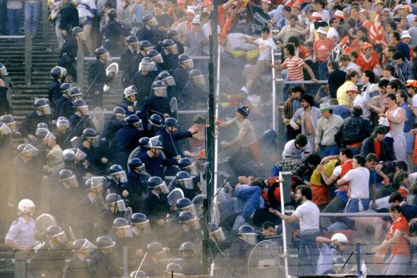
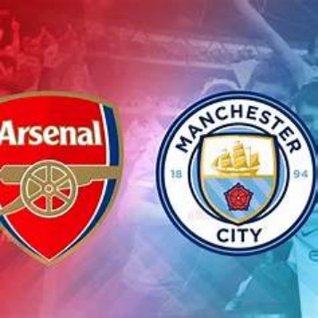

体育无关政治”的口号是历史上每个时代的憧憬和理想，但可惜的是，体育从来都不只是单纯的娱乐和切磋，它总是和那个时代的经济政治话题如影随形。
追溯到古希腊，彼时的奥运会就是各个城邦间没有硝烟的战争，惨无人道的角斗士比武是古罗马人的第一娱乐；一千五百余年前，战车比赛风靡拜占庭的君士坦丁堡——支持者们逐渐划分出了蓝绿派系，“蓝党”取意大海，在海员和商人的基础上吸收贵族和议员，支持中央集权；“绿党”取意大地，成员多为农民和地主，主张地区自治。公元532年，两党成员在竞技场的看台上爆发冲突，后续又升级成“尼卡暴动”，两日内城中浓烟滚滚、烈焰翻腾，元老院、圣索菲亚大教堂、亚历山大浴场、提奥多西市场等多地付之一炬，君士坦丁堡最引以为荣的地区顿时化为焦土。
时至今日，同样一片土地不再是拜占庭的首都，更名为伊斯坦布尔的城市在2023年的六月见证了来自英超的曼彻斯特城圆梦欧冠，成就三冠王伟业。那些狂喜的曼城球迷或许不知，总面积仅为7992平方米的绿茵场上曾经混杂着血泪与争斗的历史，那一粒小小的足球在更为广大的世界经济版图上碰撞出时代强音。
一、为什么是足球？为什么是英格兰
国际足联FIFA拥有211个会员，相比之下，联合国也不过仅有193个成员国。世界范围内，足球产业年生产总值近万亿美元，占体育产业总产值的43%，被称为“世界第17大经济体”。足球，何以成为世界第一运动？
当视角拉回中世纪的欧洲，封建领主制度下，城市活力和市民生活的丰富度严重不足，体育只能是局限于贵族的小众爱好。无论是网球、高尔夫、马术等传统贵族项目，还是从军事训练中演变而来的投掷、摔跤、射箭，这些曲高和寡、不接地气的运动，既无法吸引没有经济实力的百姓参与，也不能号召缺乏空闲时间的劳动人民观看，自然也就没办法形成群体的热烈效应。
而与之不同的，足球具备鲜明的无产阶级属性。蹴鞠被国际足联认定为足球的最早雏形，但除此之外，各个国家和民族都不约而同地发明出了用脚踢球的活动。一般认为，现代足球起源于中世纪的英格兰——相邻的两个村子在农闲时聚到一起，以充气的猪膀胱为球，没有规则、没有战术，打进球门即为胜利。尽管随着运动中的争抢冲撞逐渐升级，足球规则不断完善，但这一草根运动属于大众的事实从未改变。足球，不需要昂贵复杂的体育器材，不需要严苛的场地限制，两拨人、一块空地、一个球，这样平民化的运动就自然成立了。

中世纪“乱战足球”
那么，现代足球因何诞生于英格兰？工业革命或许是这个问题的答案。英国左翼史学家爱德华·汤普森在著作《英国工人阶级的形成》一书中提及到足球是农闲时节的日常娱乐活动，而工业革命带来了人口的普遍流动，给了足球走出乡村的机会，成为正式的体育项目；在这一过程中，外来人员与当地土著、底层工人与中产阶级间的矛盾不可避免地和现代足球紧密联系在了一起。
16世纪，毛纺织业快速发展，羊毛产品市场发达，英国贵族强制将耕地变为牧场；到了19世纪，英格兰20%的土地都已改耕为牧，农民在这场圈地运动中彻底转化为无产者。18世纪，工业用蒸汽机发明后，工厂如同雨后春笋般成长起来，被迫离开土地的劳动力被吸收到工厂，传统的家族和血缘关系逐渐被雇佣关系取代。人们没有时间接受教育，没有娱乐活动作为精神寄托，高强度的工作和恶劣的生活环境下，喝酒和斗殴自然成为工人们的情感宣泄出口，也因此成为了社会的不稳定因素。
教会因此开始鼓励人们通过运动发泄精力、培养感情。1857年10月24日，在种植大棚中成立的谢菲尔德俱乐部成为了世界第一个足球俱乐部；几年后的1863年，英格兰足球总会成立，足球自此具有了普遍统一的比赛规则。如今英超的老牌豪门也都是在这样的背景下代表工业区亮相：1878年铁路工人建立了曼联，1880年联合钢铁厂的工人建立了曼城，1886年皇家兵工厂工人建立了阿森纳。这些俱乐部大多设在工人聚会的啤酒馆中，踢球的运动员就是观众们的同事、朋友、邻居，看球既可以消遣娱乐，又能在分出胜负的同时附带身份价值，共同支持一个球队的球迷群体共享新的身份标签，球队的胜利与标签的社会地位间深度绑定，足球也就因此成为了当时工人阶级最重要的娱乐和集体活动。
二、暴力升级、新自由主义改革与英格兰足球至暗点
可以想见的是，为了宣泄精力和负面情绪而诞生的足球运动不可能压抑住人们心中涌动的暴力因子，反而为程度更剧烈、范围更广的摩擦与冲突搭建了天然的舞台。在联赛中，球队代表社区和城市，在国际比赛中，球队代表国家；从球员间的身体对抗，到球迷间的看台骂战，这些冲突有了更高尚的理由和“不能输”的目标，无疑为宗派主义，地域主义、民族主义的形成提供了“沃土”。
英超评论员周枫曾概括说：“在维多利亚时代的英国，球队基本上是自行发展的。教会组建、板球队改建、街头球队逐步崭露头角；大部分球队在工厂中建成，有时雇主也会鼓励工人组成球队……这种情况在英格兰北部和中部的工业区以及苏格兰的中央工业区都是十分普遍的”。这番话再次证明现代足球是工业革命和无产阶级的产儿，它从诞生的那天起，就带有浓厚的无产阶级属性，不同的阶级、族群、宗教群体间难以决断的冲突，往往要到绿茵场上分胜负。也正因如此，英格兰足球长期带有本国工人粗朴狂野的风格，孕育了英格兰浓厚的足球流氓和暴力文化——比赛和球迷对立就是阶级斗争和族群冲突的延伸。
足球，以缓和阶级矛盾为目的，同时却也在赛场上刺激着冲突的产生，这样的二元性在为工人和底层劳动者群体提供聚集机会的同时，也成为资本家转移阶级矛盾的重要手段。如何削减足球的革命造反精神，将足球打造为工人阶级的安抚奶嘴，成为了英国统治者不得不关注的重要议题。
1960年代后期，英国经济发展遭遇瓶颈，出现滞胀；1979年，撒切尔夫人上台后激进地推动新自由主义改革，大力推行产业私有化政策，大幅削减福利开支，打击工会势力。
撒切尔夫人不喜欢足球，她从底层一路逆袭成为大英最有权势的女人，不求上进的底层工人球迷无疑是她鄙夷的对象，是大英的蛀虫——他们大多子承父业、坚信读书无用，但同时还对自己每日枯燥的流水线工作感到厌恶，只会通过足球、酗酒和斗殴来获得存在感和快感。但足球也是撒切尔夫人必须特别关注的事情，因为在激进的改革下，英国的失业率暴增，传统工业区迅速没落，大量的流氓无产者早就成了英格兰足球冲突的主要制造者。
19世纪80年代，足球冲突到达高峰期。1985年的欧冠决赛，英格兰的利物浦和意大利的尤文图斯间爆发了欧洲足球历史上死伤最惨重的事件：比利时布鲁塞尔的海瑟尔球场内，围墙在球迷冲击中坍塌，大批尤文球迷从墙上摔下或被压在墙底——在这个尤文捧杯的夜晚，39人死亡，300余人受伤。

海瑟尔惨案
这一惨案是撒切尔政府通过整治足球行业打击工会的绝佳“机会”。决赛后第二天，撒切尔夫人亲自向国际足联、欧足联、英足总通话施压，后续英格兰所有球队退出欧洲三大杯赛，英格兰所有足球俱乐部在欧洲禁赛5年；一系列的法规随之颁布，看球时酗酒、扔东西、打架都是犯罪；设置进场白名j单和安装高压电网等举措也一度投入实施。
似乎在撒切尔夫人的铁腕整治下，足球暴力在瞬间清扫一空。但英格兰的足球流氓势又怎会就此屈服？足球暴力冲突升级的社会根源是英国传统产业的衰落和大量失业工人的出现，球迷斗殴的背后是工人罢工、居民骚乱一类危害公共秩序的问题。同样，对体育产业的改革只是撒切尔政府缩减公共支出的一环，只是私有化、下岗潮、脱实向虚的代表缩影。
政府停止输血、国有企业破产、私人接盘、工人下岗，1980年代中期，英国有325万人失业，终生靠着政府救济金度日，这也导致了英国犯罪率的飙升和大英帝国的产业和地缘版图的崩坏。
英国第二大城市、制造业中心伯明翰首当其冲，当地两支球队阿斯顿维拉和伯明翰队随之资金链断裂，一度降级至第二、第三级别联赛。大量失业工人和一蹶不振的球队战绩，使工业区的酒吧、饭店失去生存根基，大量底层工人被迫涌入伦敦等地“流浪”，幸存的企业难以为继，经济陷入恶性循环。路虎和捷豹这两大昔日的伯明翰工业骄傲，先后被卖给美国福特和印度塔塔。
无独有偶，苏格兰在私有化过程中，大批家庭双职工下岗，油田收入反哺比例一降再降。或许如今英格兰与苏格兰球队的对立之势，以及苏格兰人拼命公投脱英的深层原因可以追溯至此。
纵观改革，私有化的确让英国的经济数据变好，但同时也让旧的社会体系迅速崩塌。传导到足球，由于资源投入有限、与欧陆隔绝，英格兰足球再无八年七冠的辉煌，技战术闭塞又落后，哪怕是坐拥贝克汉姆、欧文、杰拉德、兰帕德等人的英格兰国家队，也成了国际赛场上“外强中干”、“软脚虾”的代名词。
三、金融业改革与英格兰足球复兴
更换视角，私有化改革为了解决“钱从哪来”的问题大力推动金融业改革。撒切尔政府抓住了英语优势，向全世界资本开放国门。1983年开始，伦敦证券交易所放弃固定佣金制、向外资开放金融业，全世界的优质资产纷纷涌向伦敦：伦交所成交量重回全球前三，欧洲债券及外汇交易规模全球领先，国际资本的轻松进出为意欲收购国企的私人老板提供了金融支持。
自由化金融改革的过程中亦有新星冉冉升起：曼彻斯特成为了除伦敦外最大的金融中心，是英格兰第二个拥有所有金融细分行业的城市。当其他俱乐部还需在地方政府和球迷间斡旋时，曼彻斯特的曼联和曼城已经有了全世界最先进的企业管理模式和良好的投融资环境，成为两家俱乐部在过往30年里，共计砍下19个英超冠军的重要基础；而剩下的11个联赛冠军，也基本上被来自伦敦的阿森纳和切尔西包揽，再次印证优质资本对球队治理的赋能。
撒切尔夫人的产业改革，缘起于英国产业工人在国际市场上逐渐丧失竞争力，也就随之被剥夺了话语权，英国选择通过金融工具、让世界资本流入自己的腰包，从而养活被淘汰的工人。紧接着，为了刺激财富流动，英国博彩业陆续解禁，赛程连续、信息量庞杂的足球自然就成为了最合适的载体；频密的博彩网点和金融机构这两只手，将大批的人、大把的钱拽到了英格兰的绿茵场上。加之英语广泛的受众和传媒业的推波助澜，过去技术、战术、观赏度最差的英超联赛，信号迅速传遍全球并坐拥最广泛的受众，逐渐显示出与欧洲其余四大联赛拉开差距的趋势。

阿森纳 vs 曼城的英超转播宣传图
高效透明的金融体系，现代化的公司治理能力，良好的收益资本预期，国际资本在涌入英格兰的同时也在足球产业站稳了脚跟：美国的格雷泽家族成为曼联新的所有者，俄罗斯石油大亨阿布拉莫维奇为切尔西带来了两座欧冠，阿联酋政商兼顾的富豪曼苏尔在2008年投资曼城并成就王朝，波士顿的芬威体育集团也帮助忍辱负重三十年的利物浦重回欧洲之巅。资本涌入意味着世界上最优秀的球员和教练都被吸引来英超，他们带来的最先进足球理念让这个粗糙简陋的联赛快速成长为世界第一联赛。本土球员耳融目染，放弃了过时的长传冲吊，学会了传控配合；在强大联赛的赋能下，英格兰国家队再次成为了世界冠军席位的有力争夺者。水平提高，自然吸引到的观众就越多，在撒切尔夫人将英格兰球队禁足37年后，全球共有156个国家转播英超，联赛收入相当于第二、三名的西甲和德甲之和。
金融也好，足球也罢，我们可以说它们都是借助殖民时代日不落帝国的遗产，在余晖的照耀下实现中兴。但同时也不能否认它们试探了时代的脉搏，在短期内交上了一份精彩的答卷。至于新自由主义是否是饮鸩止渴、是否是在国力衰弱之时的续命之举，还需交给更长远的未来解答。
四、足球上的政治经济学
离开英格兰大地，我们将目光拓展到欧洲大陆，足球与世界经济史间的密切联系更加清晰可见——世界足球的兴衰背后正是世界经济版图的变化。上世纪八九十年代，冷战生生扯断了东西欧天然的经济文化链接，地中海必然成为东西欧贸易的纽带和生命线，意大利有了吸引全世界球星的资本和底气，意甲顺势成为最好的联赛。而当冷战结束，大西洋贸易和欧洲陆路交通迅速取代地中海，意大利足球的衰落只能是历史的必然。随着大批拉美人在跨大西洋贸易中进入欧洲，操持着相同语言的西班牙和葡萄牙顺理成章地成为拉美人的欧洲落脚点。西甲联赛随之异军突起，大罗、小罗、梅西、内马尔等拉美天才推升了联赛水准，也因此造就了皇马、巴萨在过去20年中称霸足坛的核心竞争力。再到拉美经济被美国反复摩擦，南美足球人才大面积垮塌，撒切尔夫人去工业化、金融立国的政策让英格兰足球走出至暗时刻、迎来新生，欧洲足球的C位递交到了英超手上。而近年来，欧洲大陆看似依旧光鲜实则破败不堪，欧洲产业转移和空心化已是亚洲崛起下的历史必然，吸纳非裔球员、“黑化”正是欧洲足球的无奈自救；当美国政府借由反腐指使FBI对国际足联下手，世界足坛的话语权正向这一非传统强国转移，一代新王梅西在实现满贯后选择迈阿密，或许也是这一问题强有力的侧面印证。更换视角，私有化改革为了解决“钱从哪来”的问题大力推动金融业改革。撒切尔政府抓住了英语优势，向全世界资本开放国门。1983年开始，伦敦证券交易所放弃固定佣金制、向外资开放金融业，全世界的优质资产纷纷涌向伦敦：伦交所成交量重回全球前三，欧洲债券及外汇交易规模全球领先，国际资本的轻松进出为意欲收购国企的私人老板提供了金融支持。
自由化金融改革的过程中亦有新星冉冉升起：曼彻斯特成为了除伦敦外最大的金融中心，是英格兰第二个拥有所有金融细分行业的城市。当其他俱乐部还需在地方政府和球迷间斡旋时，曼彻斯特的曼联和曼城已经有了全世界最先进的企业管理模式和良好的投融资环境，成为两家俱乐部在过往30年里，共计砍下19个英超冠军的重要基础；而剩下的11个联赛冠军，也基本上被来自伦敦的阿森纳和切尔西包揽，再次印证优质资本对球队治理的赋能。
撒切尔夫人的产业改革，缘起于英国产业工人在国际市场上逐渐丧失竞争力，也就随之被剥夺了话语权，英国选择通过金融工具、让世界资本流入自己的腰包，从而养活被淘汰的工人。紧接着，为了刺激财富流动，英国博彩业陆续解禁，赛程连续、信息量庞杂的足球自然就成为了最合适的载体；频密的博彩网点和金融机构这两只手，将大批的人、大把的钱拽到了英格兰的绿茵场上。加之英语广泛的受众和传媒业的推波助澜，过去技术、战术、观赏度最差的英超联赛，信号迅速传遍全球并坐拥最广泛的受众，逐渐显示出与欧洲其余四大联赛拉开差距的趋势。
梅西、c罗、内马尔
足球从来都不只是足球——整个世界的社会活动与社会关系在源头上都受制于经济和政治，自然不会单单为足球打造出一个世外桃源。同时，足球作为世界上影响力最大的体育运动，有着牵动世界上绝大部分人口的能力与传播力，势必也会影响政治、经济和社会格局。
但是，更多人爱的，不会是谋取非人道利益的工具和制裁惩治的暴力，不会是被玩弄、被摆布、被阴谋的玩物；我们热爱的，归根到底是一项以公平公正为准则，以竞技对抗为形式，以锻炼身心、传递爱与快乐为目的的体育运动；我们热爱的，是最纯粹的体育精神、最真实的激情与快乐，是那些令人悲喜交加、潸然泪下、念念不忘，夜不能寐的夜晚。
尽管足球背后的博弈拉扯、权谋手段在那些魔幻现实、骇人惊闻的丑闻曝光早已不是秘密，但仍然会有无数人深爱着他，爱这项属于人民的运动，爱那份在政经手段逼迫下、绿茵场上难得的纯粹竞技。